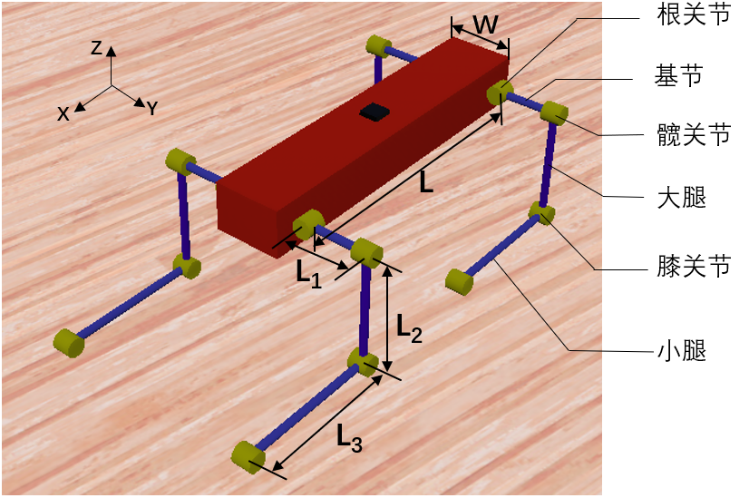
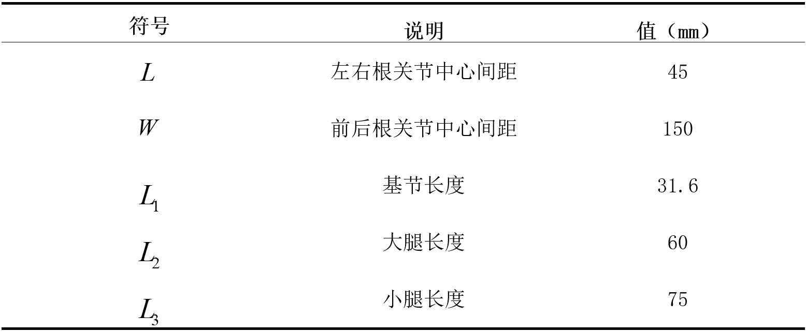
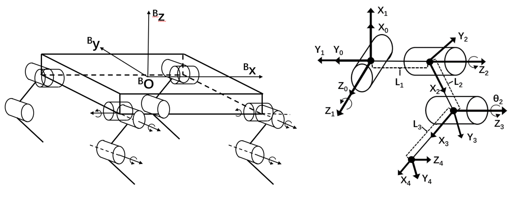
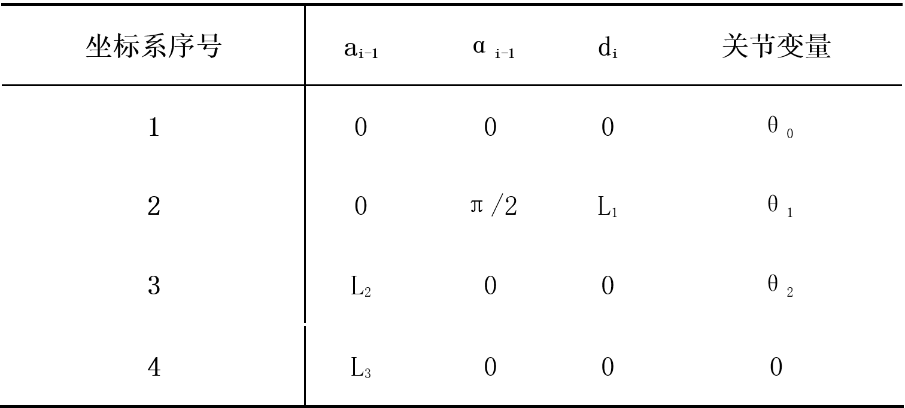
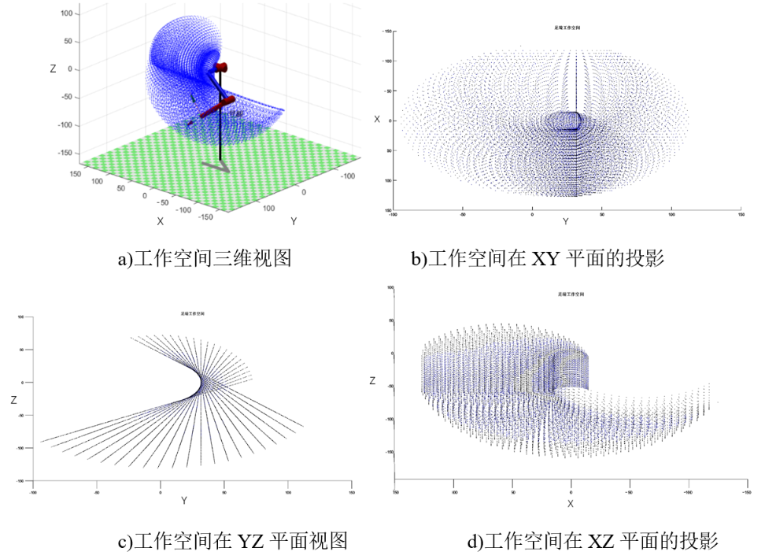

正运动学分析
本章涉及到四足机器人的建模分析方面的内容。通过对四足机器人单腿建立数学模型，解决单腿运动学正解与反解的问题 ## 2.1 运动学参数 为了便于整机设计与建模分析，在仿真软件Webots中，按照传统的四足机器人的外形结构建立了仿真模型，名为XGOmini。如图2-1所示。 
图2-1所示的机器人仿真模型中，四足机器人每条腿具有三个自由度，由上自下依次是根关节、髋关节和膝关节。根关节与髋关节之间的连杆定义为基节，髋关节与膝关节之间的连杆定义为大腿，膝关节与足端之间的连杆定义为小腿。四条腿的结构外形和尺寸参数完全一致，表2-1给出了机器人参数。 
2.2 单腿正运动学建模
运动学分析是四足机器人自由步态规划的基础，分为运动学正解和运动学逆解。机器人学中运动学正解是指，给定机械臂关节角度、连杆长度等参数，求解末端的位置和姿态；运动学逆解是指，给定机械臂末端的位置和姿态，求解机械臂对应的各关节运动参数。 四足机器人常用的的运动学建模方法有D-H方法、李代数方法等。D-H方法是Denavit 和Hartenberg提出的一种用于机器人运动学求解的通用方法。D-H方法的思路为，在机器臂的所有连杆上都建立一个坐标系，运用变换矩阵来描述相邻两连杆之间的空间变换关系，能够应用于任意自由度数串联机构的正向运动学场景。但是当自由度数过多时，运用D-H方法求解运动学逆解，会出现解不唯一和无法获得逆运动学解析解的问题。不过由于XGOmini单腿只有三个自由度，所以可以使用D-H方法进行运动学建模。 由于四足机器人的四条腿结构完全对称，所以只对单腿进行运动学建模即可。本文以左前腿为例，如图2-2所示，首先分别建立整机坐标系与单腿连杆坐标系，然后对单腿进行正运动学求解。 
根据表2-1可以得到左前腿连杆坐标系的参数，如表2-2所示。 
其中，连杆长度\(a_{i-1}\)表示的是两关节轴线之间的距离，即从\(z_{i-1}\)和\(z_{i}\)之间的公垂线长度； 连杆扭角\(\alpha_{i-1}\)表示的是两关节轴线间的夹角，即从\(z_{i-1}\)到\(z_{i}\)绕\(x_{i-1}\)旋转的角度； 连杆距离\(d_{i}\)表示的是\(x_{i-1}\)到\(x_{i}\)沿\(z_{i}\)的距离； 连杆转角 表示的是从 到 沿 旋转的角度。 相邻两个连杆坐标系\(\{i\}\)和\(\{i-1\}\)之间的空间关系用变换矩阵\(_{i}^{i-1}T\)进行描述。是由以下四个子变换得到的： 绕\(x_{i-1}\)轴旋转\(\alpha_{i-1}\)； 沿\(x_{i-1}\)轴平移\(a_{i-1}\)； 绕\(z_{i}\)轴旋转\(\theta_{i}\)； 沿\(z_{i}\)轴平移\(d_{i}\)； c可以得到相邻连杆坐标系之间的变换矩阵\(_{i}^{i-1}T\)的表达式： \[ \begin{aligned} _{i}^{i-1}T &=\operatorname{Rot}\left(x, \alpha_{i-1}\right) \cdot \operatorname{Trans}\left(x, a_{i-1}\right) \cdot \operatorname{Rot}\left(x, \alpha_{i-1}\right) \cdot \operatorname{Trans}\left(z, d_{i}\right) \\ &=\left[\begin{array}{cccc} c \theta_{i} & -s \theta_{i} & 0 & a_{i-1} \\ s \theta_{i} c \alpha_{i-1} & c \theta_{i} c \alpha_{i-1} & -s \alpha_{i-1} & -d_{i} s \alpha_{i-1} \\ s \theta_{i} s \alpha_{i-1} & c \theta_{i} s \alpha_{i-1} & c \alpha_{i-1} & d_{i} c \alpha_{i-1} \\ 0 & 0 & 0 & 1 \end{array}\right] \end{aligned}\tag{2-1} \] 将表2-2中的参数，代入式(2-1)中，可得两个相邻坐标系之间的变换矩阵，如下： \[ \begin{align} _{1}^{0} T&=\left[\begin{array}{cccc} c \theta_{1} & -s \theta_{1} & 0 & 0 \\ s \theta_{1} & c \theta_{1} & 0 & 0 \\ 0 & 0 & 1 & 0 \\ 0 & 0 & 0 & 1 \end{array}\right] \tag{2-2}\\ _{2}^{1} T&=\left[\begin{array}{cccc} c \theta_{2} & -s \theta_{2} & 0 & 0 \\ 0 & 0 & -1 & -L_{1} \\ s \theta_{2} & c \theta_{2} & 0 & 0 \\ 0 & 0 & 0 & 1 \end{array}\right] \tag{2-3}\\ _{3}^{2} T&=\left[\begin{array}{cccc} c \theta_{3} & -s \theta_{i} & 0 & L_{2} \\ s \theta_{3} & c \theta_{i} & 0 & 0 \\ 0 & 0 & 1 & 0 \\ 0 & 0 & 0 & 1 \end{array}\right] \tag{2-4}\\ _{4}^{3} T&=\left[\begin{array}{cccc} 1 & 0 & 0 & L_{3} \\ 0 & 1 & 0 & 0 \\ 0 & 0 & 1 & 0 \\ 0 & 0 & 0 & 1 \end{array}\right] \tag{2-5}\\ _{0}^{B} T&=\left[\begin{array}{cccc} 0 & 0 & 1 & L / 2 \\ 0 & -1 & 0 & W / 2 \\ 1 & 0 & 0 & 0 \\ 0 & 0 & 0 & 1 \end{array}\right]\tag{2-6} \end{align} \]
由式(2-2)到式(2-6)，可以得到足端坐标系\(\{O_4\}\)相对于本体坐标系\(\{B\}\)的变换矩阵： \[ \begin{aligned} _{4}^{B} T &={ }_{0}^{B} T \cdot{ }_{1}^{0} T \cdot{ }_{2}^{1} T \cdot{ }_{3}^{2} T \cdot{ }_{4}^{3} T \\ &=\left[\begin{array}{cccc} S_{23} & c_{23} & 0 & \mathrm{~L} / 2+L_{2} S_{2}-L_{3} S_{23} \\ -S_{1} c_{23} & S_{1} S_{23} & c_{1} & \mathrm{~W} / 2+L_{1} c_{1}+L_{2} S_{1} c_{2}-L_{3} S_{1} c_{23} \\ c_{1} c_{23} & -c_{1} S_{23} & S_{1} & L_{1} S_{1}+L_{2} c_{1} c_{2}-L_{3} c_{1} c_{23} \\ 0 & 0 & 0 & 1 \end{array}\right] \end{aligned}\tag{2-7} \] 可以将\(_{4}^{B} T\)分解为转动部分和移动部分，如下式所示： \[ \begin{align} { }_{4}^{B} T&=\left[\begin{array}{cccc} & & & P_{x} \\ & R & & P_{y} \\ & & & P_{z} \\ 0 & 0 & 0 & 1 \end{array}\right]\tag{2-8}\\ R&=\left[\begin{array}{ccc} S_{23} & c_{23} & 0 \\ -S_{1} c_{23} & S_{1} S_{23} & c_{1} \\ c_{1} c_{23} & -c_{1} S_{23} & S_{1} \end{array}\right]\tag{2-9}\\ P&=\left[\begin{array}{c} { }^{B} P_{x} \\ { }^{B} P_{y} \\ { }^{B} P_{z} \end{array}\right]=\left[\begin{array}{c} \mathrm{L} / 2+L_{2} s_{2}-L_{3} s_{23} \\ \mathrm{~W} / 2+L_{1} c_{1}+L_{2} s_{1} c_{2}-L_{3} s_{1} c_{23} \\ L_{1} s_{1}+L_{2} c_{1} c_{2}-L_{3} c_{1} c_{23} \end{array}\right]\tag{2-10} \end{align} \] 式(2-8)中R代表足端坐标系相对本体坐标系的姿态，在平面自由步态规划问题中不考虑足端姿态，P代表足端在本体坐标系中的位置。式(2-10)即为四足机器人左前腿的运动学正解，若已知该腿的三个关节角度，带入式中可得足端相对于坐标系中的位置。 已知根关节角度范围为\(\left[-50^{\circ}, 90^{\circ}\right]\)，髋关节角度范围为\(\left[-90^{\circ}, 80^{\circ}\right]\)，膝关节角度范围为\(\left[-60^{\circ}, 45^{\circ}\right]\)。利用matlab中的 robotics toolbox 创建四足机器人的单腿模型，在限制范围内，遍历各个关节角度，得到足端工作空间,如图2-3所示。 